Santorini Website Redesign

Duration
Jan - Mar 2020
Course
COGS 187B - Practicum in Pro Web Design
Role
UI / UX Designer
Skills
User Interviews, Personas, Wireframes, Competitive Analysis, Site Architecture, Prototyping, User Testing
Tools
Figma, Balsamiq
Background
Santorini Island Grill is a chain Greek restaurant with three locations in San Diego and one in Santa Barbara. We reached out to the president, Takis Vartelas, and offered to redesign the existing desktop and mobile website over the course of 10 weeks. Santorini aims to reflect their motto, "We Speak Fresh", in their customer service and food options. Their branding implements aesthetics of Greek culture, and is eye-catching, clean and modern.
Client Survey
We first interviewed our client to get a better understanding of their objectives, branding, and information about the restaurant. We compiled a list of questions to ask our client, such as what he would want users to learn about Santorini after visiting the website, his current frustrations with the website, and features he would want to be implemented. We interpreted his answers and came up with a priority list for the redesign, which included:
- An "About" page to highlight Santorini's history and Greek culture
- Emphasize freshness in Santorini's food
- Easier to read menus with more pictures
- Have a business page for potential investors
Read more about our in-depth client survey and priority list.
User Interviews & Personas
Next, we conducted user interviews with 9 participants from the UCSD community. We focused on the Santorini located at UCSD's Price Center because our client wanted to reach out and expand to other universities, so we interviewed people from the UCSD community to get more relevant data for his target audience of university students. Some questions we asked included:
- What are some factors you consider before choosing a place to eat?
- Why do you choose to eat at Santorini over other food places?
- What do you think about the quality of the food at Santorini?
- Tell me about a time you visited a restaurant website. Why did you visit it?
- Have you ever visited the Santorini website? If yes, what are your impressions of it? If no, what would make you want to use it?
See our spreadsheet for our interview responses.
Personas
After conducting user interviews, we compiled the data into 3 distinct user types: savers, busy-bodies, and health-conscious.
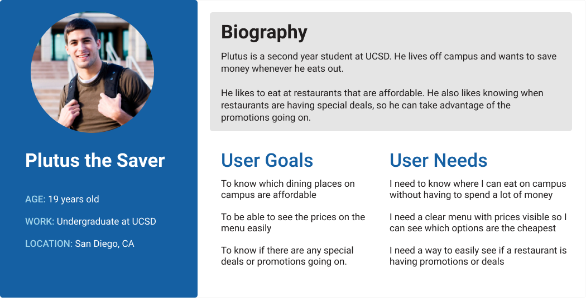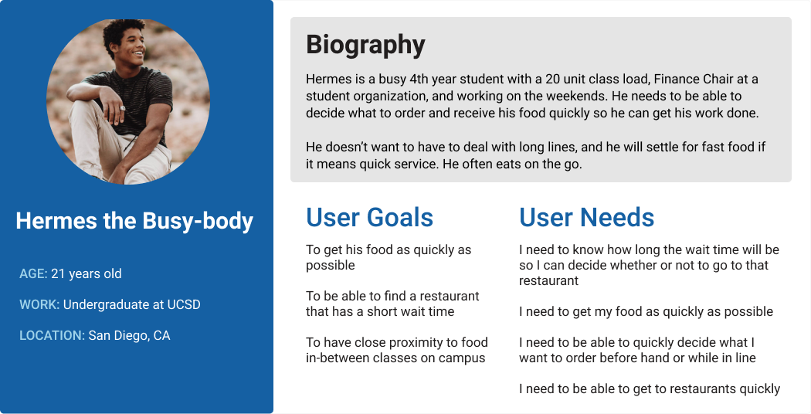
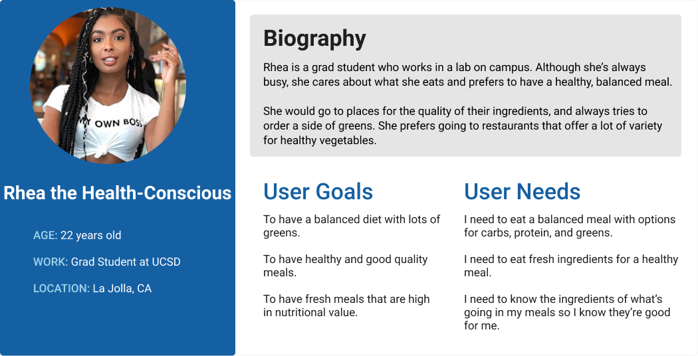
From the interview data we gathered and trends we observed, we came up with specific user needs for each user type. We then created 6 user scenarios and 30 unique use cases that helped us establish a list of potential features and functionality for our redesign of Santorini's website.
Features and Functionality Table
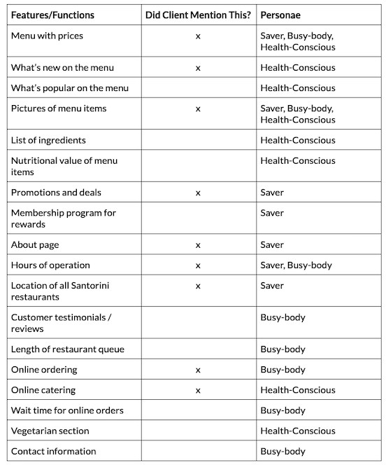Read more about our user scenarios and use cases.
Competitive Analysis & Mood Boards
We chose 5 of Santorini Island Grill's competitors: Little Greek Island Grill, The Simple Greek, Panda Express, Jamba Juice, and Tapioca Express. The first two restaurants were chosen because they are also Greek restaurants that serve the same type of food as Santorini. The last three were chosen based on proximity to the Santorini locations in San Diego. We analyzed both their mobile and desktop sites and put together a competitve analysis, separated into branding, functionality, site architecture, content, and overall good design ideas to inspire us for our redesign of Santorini's website.
Summary of Findings
- Place emphasis on slogan to ensure that is the first thing that users see.
- Use pictures of food to attract customers. This also allows Santorini's fresh ingredients to shine through on their website.
- Keep it consistent and simple to avoid cluttering.
- Clearly label opening times, closing times, and directions for each store location.
- Embedded forms simplify application processes for users to reach out to the company.
- Provide clear indication of which page the user is currently on.
- Highlight the business' history to establish credibility and tell their story.
- Organize menu items in a clear manner so users can browse through items easier.
What We Could Use
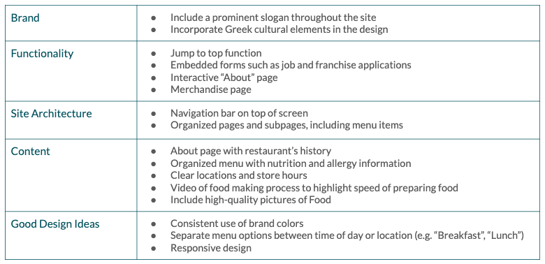Check out our in-depth competitive analysis presentation.
Mood Boards
We also put together several mood boards that represent the theme, culture, color palette, and overall aesthetic of Santorini's website.
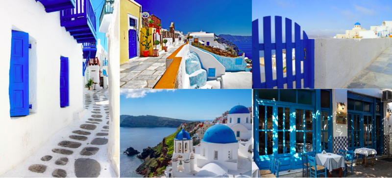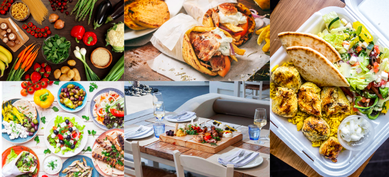
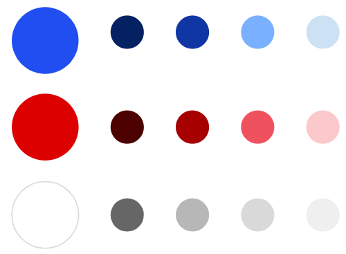
Creative Brief
We wrote a creative brief detailing what the finished product will be, with a summary of what content goes into each page. We defined the key target audience, and stated clear, measurable objectives for both our client and the audience.
Key Target Audience Insights
- Comunicate that Santorini provides fresh, high quality food at a great price point.
- Attract younger people with our design, since our primary audience is college students, and Santorini plans on expanding to more university locations.
- Make information about the restaurant clear and easy to find, so the audience knows that the website is reliable.
Wireframing and Prototyping
We sketched out low-fidelity wireframes of the mobile website to show the layout of each page, the navigation, and the footer.
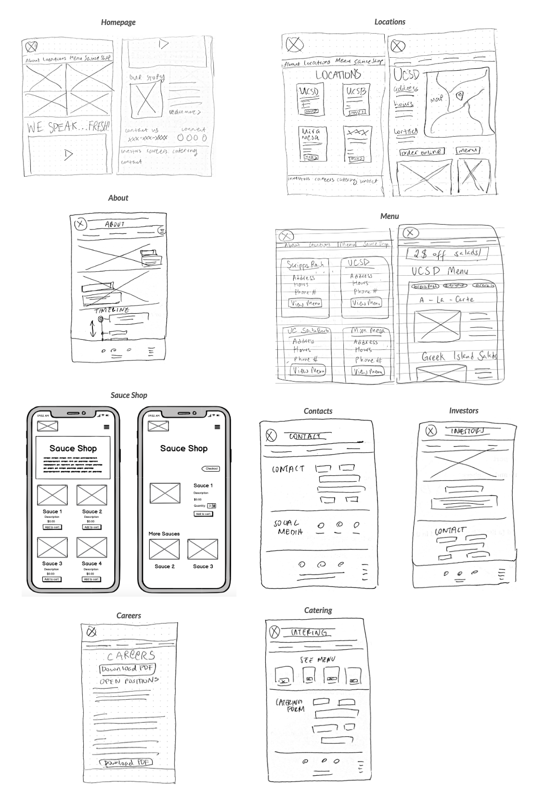Check out our slides describing all the functional specifications and interactivity in our wireframes.
Site Architecture
We also created a site map, showing all navigation labels and the topology of how pages are connected.
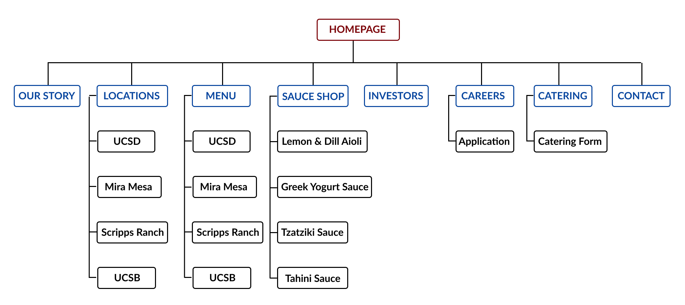Prototyping
We then designed interactive high-fidelity wireframes for both the mobile and desktop websites using Figma.
Mobile
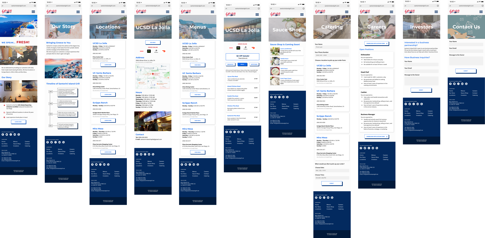Desktop

User Testing
After we created a working prototype of our website, we conducted user testing. Tasks included finding out what time a restaurant closes, finding the address, ordering online, finding where to buy sauces, ordering catering, and downloading the job application. Read more about our user testing plan. We tested on mobile first, and then desktop. Some users struggled with a few of the tasks we had for them, making it clear what we needed to work on in order to improve their experience. After we received feedback from our users, we noted the points we needed to fix and change.
Location Cards
Users were confused about the tags in the location cards, thinking they were clickable links. To remedy this, we decided to remove the tags.
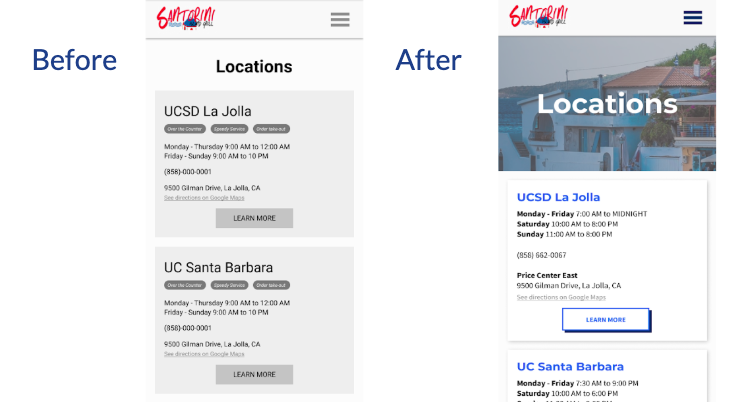Top:Locations page on mobile. Bottom: Corresponding desktop page.
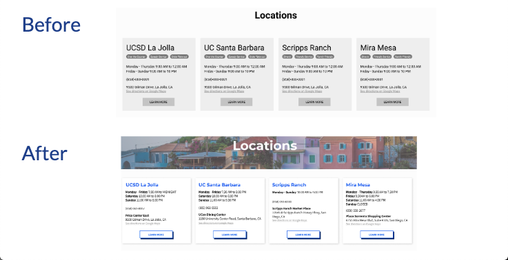Dropdown Navigation
Users also experienced some trouble with the navigation, specifically the dropdown for Locations and Menus. On mobile, we had little arrows next to those two pages in the navigation. However, we only made the arrow lead to the dropdown, which was difficult for the user due to the small surface area. Clicking on the name of the page would lead them to the overview pages for Locations and Menus. We decided to remove the dropdown for these pages and only keep the links to the overview pages.
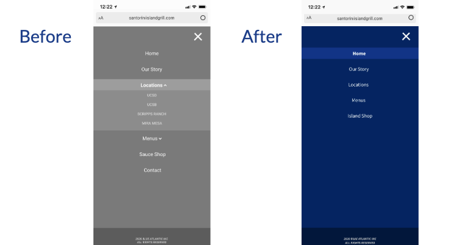On desktop, dropdowns for each location would appear on hover over the Locations and Menus header. However, after user testing, we found out that users didn't know that they could click on those pages to get to an overview page with all the locations. They didn't know that page existed. We decided to remove the dropdowns on both mobile and desktop to make it less confusing for users.
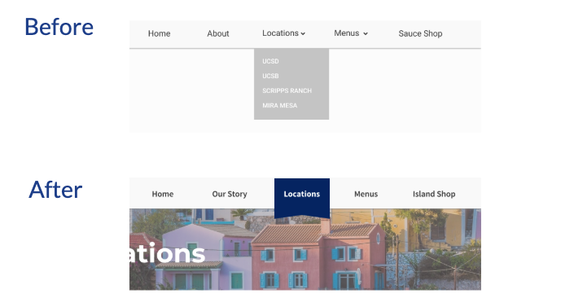Footer
Originally, we had a three-column design with contact information in the footer. However, this overwhelmed the user with lots of information and looked cluttered. Users couldn't find the pages that weren't in the top navigation since we included every page in the footer. After user testing, we decided to highlight the social media links and keep only the 4 pages that weren't in the top navigation in the footer (Catering, Careers, Investors, and Contact). We also moved the contact information to the contact page to make the social media and navigation links stand out more.
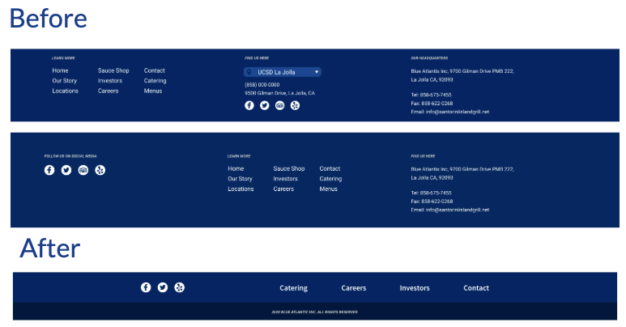Top: Desktop footer. Bottom: Corresponding mobile footer.
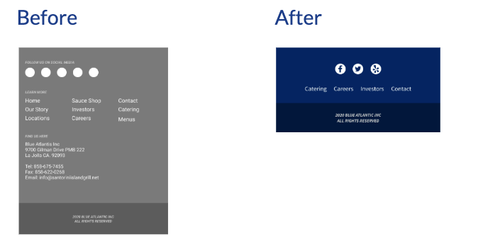Key Design Problems
We felt it was difficult when our client's requests conflicted with our user's needs and user testing results.
Navigation
We were wondering what the best way was to separate the pages on our site. Our main personas wanted quick access to the Locations, Menus, and Investor pages. However, our client insisted that the investors and other contact pages should be hidden, so that only the people who were genuinely interested and scrolled through the website enough would reach out to him. We struggled with how to separate the pages and where to place them, so we settled on this navigation design to highlight pages that were most important.
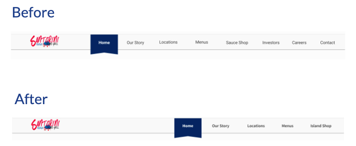Our Story
On the About page, we struggled to make it more visually appealing and convey the brand more. At first, we only included photos of Greece, but there wasn't much relation to the restaurant despite the timeline content being about the founding of the Santorini restaurant. Afterwards, we received more content from our client and included pictures of Greek food and fresh ingredients to reiterate on the motto, "We Speak Fresh!" We also added an additional section on "Benefits of a Mediterranean Diet".
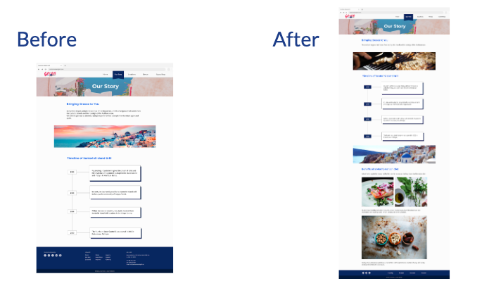Logo
We used the current Santorini logo in our initial prototype. However, the logo looked messy and cluttered. Users were unable to read "Island Grill" in the logo (especially on a small screen on mobile devices). This is important since it's the name of the website. We decided to redesign the logo and make it cleaner by taking out the water in the old logo and straigtening out the letters so it didn't overlap with other elements in the logo, making it legible for users to read. Overall, we made it look more modern while maintaining the color scheme and visuals to convey the brand.
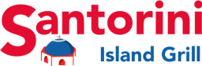 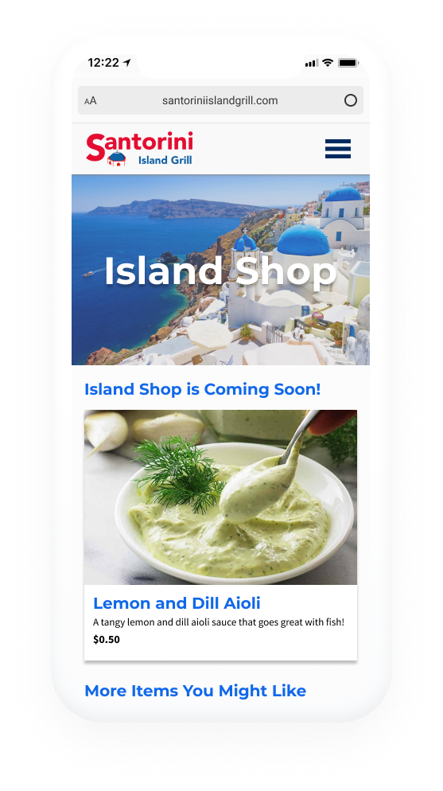
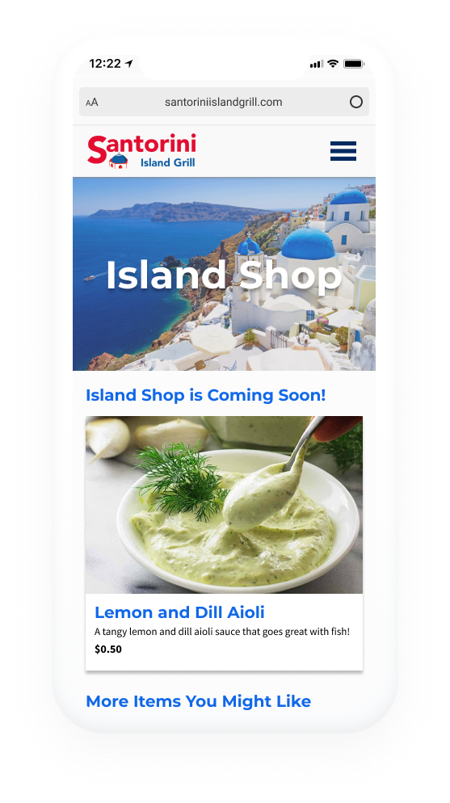
Takeaways
It was challenging to manage both client expectations as well as user needs, especially when they conflict with each other. It was difficult to get the content we needed from our client and we struggled to find the best way to visually present our information and convey the Santorini brand through our redesign. The feedback we received from user testing, our client, and our professor helped us focus on what to improve on. Working on this project with my team has been a really rewarding experience.
Next Steps
- Include Catering in mobile hamburger menu as it is an important component for a restaurant
- Implement a roll over feature on menu images to see them better
- Add a gallery to display larger images of the food
Our prototype included a few functionalities that aren't fully interactive due to Figma's restrictions. The next steps would be to work with a developer to implement these functionalities on the live site.
- Image carousel on the home page
- On the actual website, the images would play automatically and users would be able to click on the arows to see the next image. The transition would be smooth. Figma can only support a horizontal scroll, so this is whow we implemented this on our design. Users would have to drag the image to see the next image on our Figma prototype.
- Locations / Menus
- These pages would show the closest location and highlight the operating hours of the current day in blue on the actual website. Our prototype assumes that the current location is UCSD's Santorini Island Grill, and that the current day is Wednesday.
- Contact forms
- In the actual website, users would be able to type in their information in the text fields. These fields would have input validation. Our current prototype doesn't allow for this kind of interactivity, so we mimicked this interaction by having a step by step completion. In our Figma prototype, if users click on the first field, then they can move on to the second field, and so on.
- Downloading Job Application
- In the actual website, a PDF of the job application would be downloaded onto the user's device. In our Figma prototype, the button is unable to prototype functionality. We added a confirmation screen after the PDF was supposedly downloaded to ensure that users understood what the functionality was.